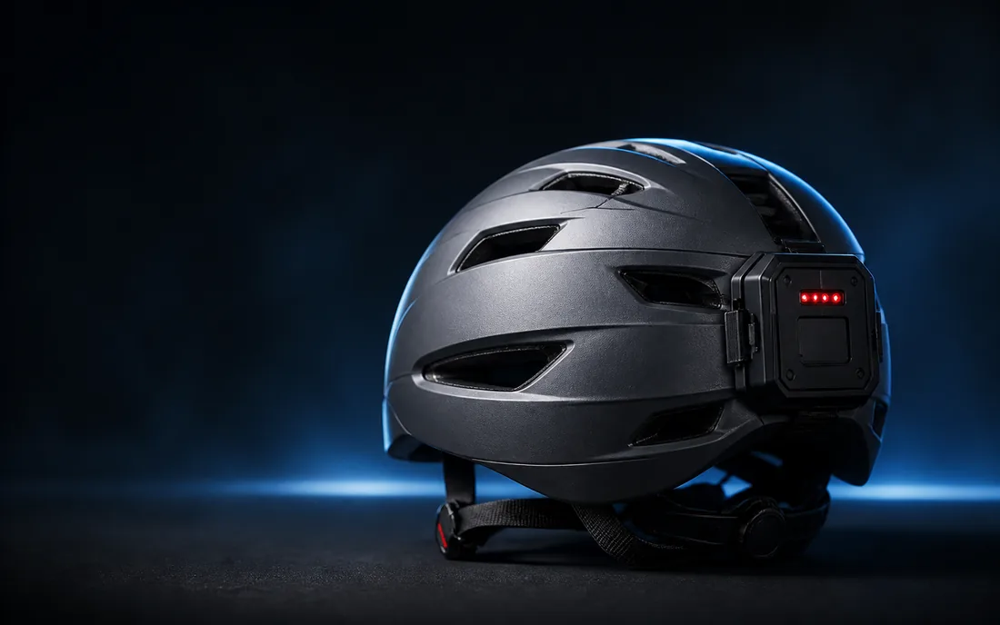

Movimiento en vivo
Esperando datos
—
|ax| + |ay| · unidades crudas
X
—
Y
—
Z
—
Conecta tu equipo a la red de la ESP32 y abre su panel local. Sin una lectura válida no se confirma el estado.
Sin lecturas recibidas

ESP32 + MPU6050 Alarma local independienteAún no hay eventos recibidos.
CONTROL LOCAL
El módulo mantiene el LED rojo y la orden de buzzer hasta restablecer la alarma con el botón físico o un comando confirmado. La web no mide las salidas.
Guía de instalación y límites ↗Prototipo experimental. Una lectura sin alarma no garantiza seguridad ni sustituye una evaluación médica, equipamiento certificado o servicios de emergencia.
TRAZABILIDAD LOCAL
Hasta 1.000 eventos guardados en este navegador, separados de los últimos 32 eventos de la ESP32.
El tiempo de cada evento es desde el arranque del dispositivo; la fecha de recepción corresponde al reloj de este navegador, no al instante del impacto. Borrar el archivo no borra la memoria de la ESP32.
ENLACE DE RED LOCAL
El navegador consulta la API del mismo equipo que sirve este panel. No usa los sensores del teléfono.
Conecta el Wi-Fi a la red de tu ESP32. Después abre la dirección local del módulo.
Este botón abre otra dirección; no empareja ni cambia el origen de la API.No hay módulos de batería ni GPS en este prototipo.
La ESP32 conserva la alarma hasta un restablecimiento confirmado: botón físico o comando remoto. Cerrar este panel no silencia el buzzer físico.
Botón físico: GPIO 25. La disponibilidad de la web no certifica el funcionamiento del circuito. LED rojo y buzzer son órdenes del firmware, no salidas medidas por la web.